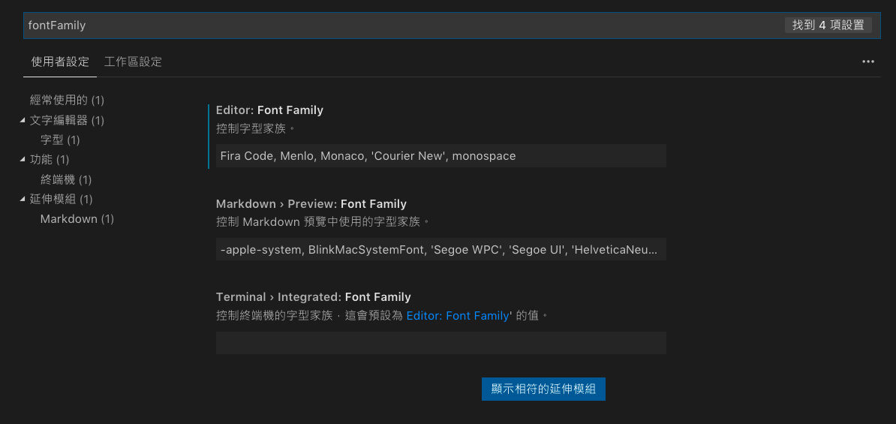

讓程式碼更易讀的字型 FiraCode 11月 28, 2018 FiraCode 是一套讓程式碼更易讀的符號字型，當初在 GitHub 看到下面的這張預覽圖 其實第一眼看到時非常不習慣，覺得只是套讓程式碼看起來更潮，裝Ｂ的開發工具 但實際試用後，發現對於程式碼的符號閱讀速度和精確度確實有不少程度的提升，看起來也更簡潔易懂 以下舉一些例子說明，左邊是 FiraCode 字型，右邊的則是一般字型的符號顯示結果 等號的比較 小於、大於符號的顯示 安裝字型方法參考 FiraCode Wiki 文件 整合開發工具Terminal 支援列表 | 編輯器支援列表 整合 VS Code - Visual Studio Code 的設定方法 在 VS Code 使用快捷鍵開啟設定選單 windows: ctrl + , mac: cmd + , 搜尋 fontFamily，找到設定欄位，在前面加上 Fira Code 結果如下圖所示  搜尋 fontLigatures，勾選設定為true